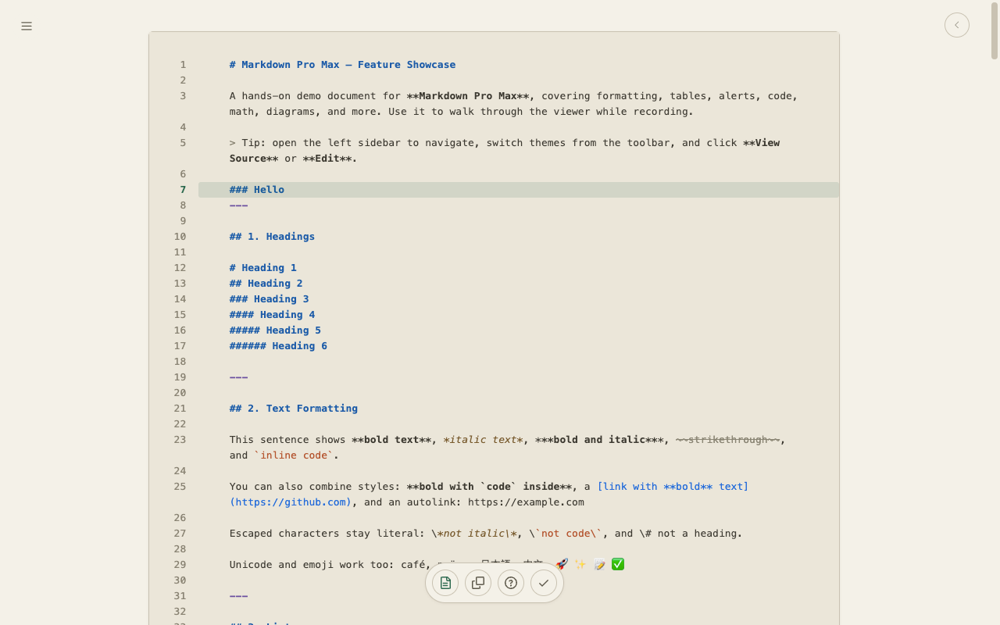
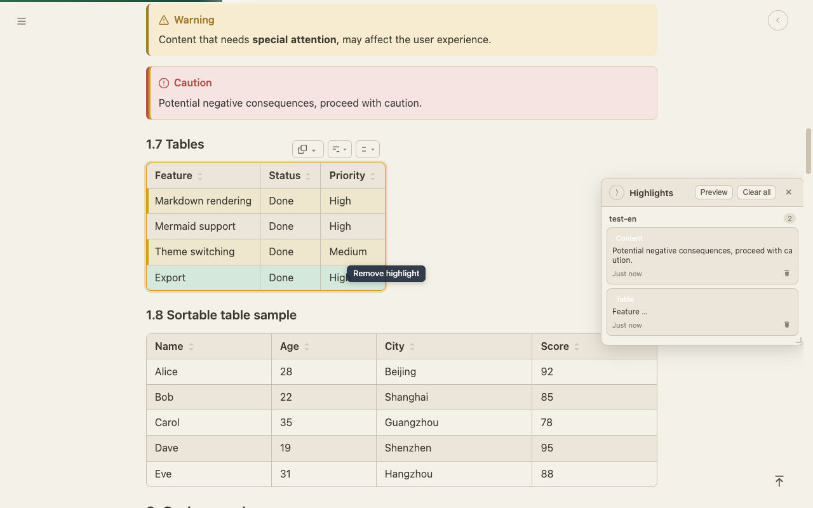
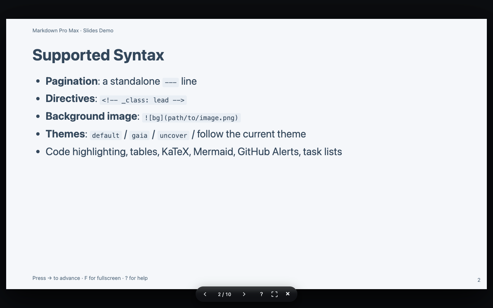
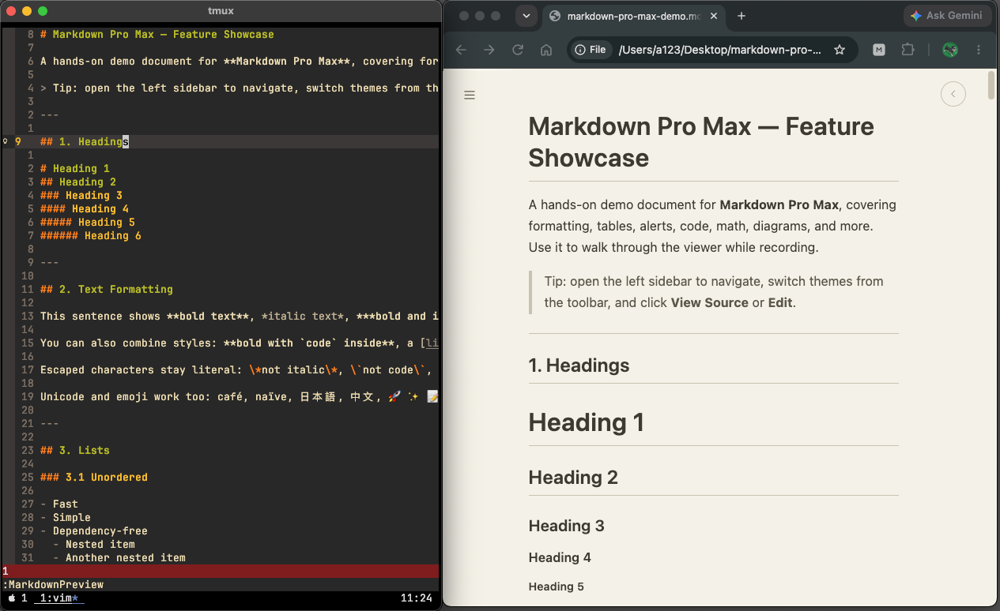

专为 Markdown 阅读打造 · Chrome · Edge 扩展
让 Markdown 阅读 赏心悦目
能读，更能写。Markdown Pro Max 是一款功能强大的浏览器扩展：Mermaid、公式、代码高亮、智能表格、批注、幻灯片演示、源码编辑与导出齐全——打开 .md 就用，无需安装 App。
8
大核心功能
100+
代码语言高亮
6
种配色主题
3
种导出格式

能读，更能写。Markdown Pro Max 是一款功能强大的浏览器扩展：Mermaid、公式、代码高亮、智能表格、批注、幻灯片演示、源码编辑与导出齐全——打开 .md 就用，无需安装 App。
从渲染到批注,覆盖 Markdown 阅读的全部需求。

一键复制为 Markdown、Excel(TSV)或 HTML;支持列排序和对齐,处理数据更顺手。

将文档一键导出为 PDF、PNG 或 HTML,分享、归档都从容自如。

支持画笔、直线、矩形、圆形、文字、高亮与橡皮擦,并可导出带批注的 PDF。

阅读进度条、字数统计、读完撒花动画,让阅读的每一刻都有回应。

assets/preview/p6.png在浏览器内直接编辑 Markdown 文件,还支持斜杠命令,让输入更便捷。

assets/preview/p7.png对文本、图片、代码块、表格、标题、段落等任意元素划线标记,标注持久保存,并可导出划线内容。

assets/preview/p8.png把文档一键切换为全屏演示。

assets/preview/p9.png在 Vim / Neovim 中一键打开浏览器预览,滚动实时同步。
查看 Vim / Neovim 插件github.com/lyuangg/vim-md-preview
从阅读到批注,完整的工作流一览。
阅读完成动画
一键导出
文件批注
Mermaid · 公式 · 主题
智能表格
源码编辑
文档划线
幻灯片预览
Vim / Neovim 插件
自动提取标题生成目录,滚动联动高亮当前章节,支持搜索过滤与拖拽调宽。
明亮、暗黑、护眼三套主题,自动跟随系统切换并记忆你的偏好。
基于 KaTeX 引擎渲染行内与块级公式,学术笔记与公式文档轻松阅读。
100+ 语言语法高亮,6 种配色主题,支持行号与一键复制。
GitHub 风格复选框,支持嵌套任务,勾选状态一目了然。
在文档任意位置写入 [TOC] 自动生成可折叠目录。
监听文件变化,文档被修改后自动重新渲染。
记录最近打开的文件,一键快速回访,可随时清空。
流程图、时序图、甘特图、类图、状态图,点击放大、缩放拖拽,支持 SVG / PNG 导出。
界面支持简体中文与 English,随时一键切换。
支持 {width=…} 属性控制宽高,点击图片即可放大查看。
可配置在链接点击时于新标签页打开,保持阅读不中断。
浏览器内直接编辑源码,自动缩进与括号补全,可保存回原文件。
对文本或元素划线标记,标注持久保存,刷新后自动重定位。
前往 Chrome 应用商店,一键添加 Markdown Pro Max。
在浏览器中打开本地或在线 Markdown 文件。
渲染自动完成,尽情享受赏心悦目的阅读体验。
专业版解锁全部能力,无订阅、无隐藏费用。所有数据依旧只保存在你的浏览器本地。
免费安装,打开任意一个 .md 文件,即刻开始。
免费使用 · 可选升级专业版 · 无需注册账号